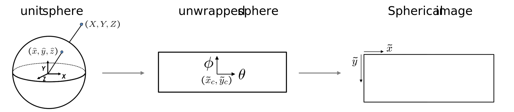

Detection of manholes using street view images for pipe cadastre control and completion¶
Gwenaëlle Salamin (ExoLabs) - Shanci Li (HEIG-VD) - Corentin Junod (SITN) - Adrien Gressin (HEIG-VD) - Roxane Pott (swisstopo)
Proposed by the City of Zürich and the Canton of Neuchatel - PROJ-STREETVIEW
March to September 2025 - Published in October 2025
All scripts are available on GitHub.
This work by STDL and HEIG-VD is licensed under CC BY-SA 4.0


Abstract: Manholes are critical access points to underground drainage and utility networks, and their accurate position is essential for consolidating and updating urban pipe cadastres. Manual surveys are labor-intensive, costly, and difficult to conduct at scale, particularly in traffic-dense environments. To address this, we evaluate the use of street view imagery combined with deep learning–based object detection and geolocalization by triangulation to automate manhole identification. Two frameworks, YOLO and Detectron2, were trained on high-resolution panoramic images in the Canton of Neuchâtel and the City of Zürich. Comparative results show that YOLO consistently outperforms Detectron2, achieving F1 scores of 0.9 or higher, while Detectron2 reaches around 0.8 F1 on street view imagery. This metric could be maintained when reprojecting the results to EPSG:2056. These results confirm the robustness and accuracy of YOLO for detecting manholes in complex urban scenes and demonstrate the feasibility of image-based deep learning for large-scale manhole inventories, enabling the reinforcement of pipe cadastres and supporting data-driven infrastructure management.
1. Introduction¶
Manholes are key access points to urban drainage and energy supply networks. They provide essential information for the management of underground infrastructure. Accurate knowledge of their position and condition is crucial for maintaining and consolidating pipe cadastres, which serve as the foundation for planning, operation, and rehabilitation of underground systems. However, existing cadastres are often difficult to maintain up to date due to the high number of involved actors, leading to inefficiencies in infrastructure management and increased operational risks. Automating the detection and positioning of manholes can therefore contribute significantly to improving the quality and reliability of urban asset inventories.
Traditionally, the acquisition of manhole data has relied on manual field surveys. This process is labor-intensive, time-consuming, and costly due to the wide spatial distribution of manholes across the territory and the challenges posed by traffic and accessibility. As a result, comprehensive surveys are difficult to conduct. Leveraging image-based methods, particularly street view imagery combined with modern object detection algorithms, offers a promising alternative. These approaches could enable large-scale, cost-effective, and efficient extraction of manhole locations, creating new opportunities to support digital cadastre consolidation and data-driven infrastructure management.
Deep learning methods have progressively transformed object detection and localization from street view imagery. Early work combined aerial and ground perspectives to catalog urban trees (Wegner et al., 2016)1 with Faster R-CNN, and was soon extended to technical assets such as telecom equipment (Hebbalaguppe et al., 2017)2 with the use of triangulation to geolocalize the objects. Advances in convolutional neural networks enabled not only robust detection but also geolocation: Krylov et al. (2018)3 demonstrated the automatic discovery and geotagging of objects by estimating the distance to the camera, while Zhang et al. (2018)4 refined this process by estimating the positions of utility poles directly using camera pose metadata. More recently, multi-view strategies have been introduced to address occlusions and improve positional accuracy, with Nassar (2021)5 showing how integrating soft geometric constraints enhances both detection robustness and geospatial consistency. Together, these studies illustrate the shift from simple visual recognition toward integrated detection–localization pipelines, where objects are always more precisely embedded into geographic reference systems.
Within this broader context, urban drainage infrastructure has emerged as a specific application domain. Santos et al. (2020)6 applied RetinaNet to detect storm drains and manholes, demonstrating that general-purpose detectors can be adapted to small and heterogeneous objects. Boller et al. (2019)7 advanced this further by automating the localization of drainage covers from public street-level imagery in Switzerland, explicitly linking detections with geospatial coordinates to build infrastructure inventories. These studies confirm both the technical feasibility and the practical relevance of deep learning for supporting drainage and pipe cadastre consolidation, laying the foundation for scalable, image-based urban water management.
The goal of this project is to extract the manholes from street view imagery thank to a deep learning (DL) algorithm and localize them in the Swiss coordinate reference system (CRS), namely EPSG:2056. Then, we compare the detected objects with the existing pipe cadastres in the Republic and Canton of Neuchâtel (RCNE) and in the City of Zürich (or Stadt Zürich abbreviated SZH). To identify the manholes, two frameworks were tested: Detectron2 by Meta and YOLOv11 by Ultralytics.
2. Data¶
2.1 Areas of interest¶
Figure 1: Areas of interest in the country side of the RCNE (up), the suburban area of the City of Neuchâtel (middle), and the city center of the SZH (down).
Several roads were selected to define the area of interest in the RCNE and the SZH. They were selected to cover landscape of the city center, suburban area and countryside (Fig. 1). They cover approximately 2.3 km2.
2.2 Street view acquisitions¶
| Provider | Altimetric precision | Planimetric precision | Height | Width | 360° cameras | LiDAR system | Acquisition period | |
|---|---|---|---|---|---|---|---|---|
| RCNE | Helimap | 5 cm | 5 cm | 4000 | 8000 | Trimble MX7 Ladybug 5 & 6 cameras 5 MP | 2x Riegl VUX-1HA, left and right | April 2020 |
| SZH | iNovitas | 5 cm | 5 cm | 2048 or 4016 | 2048 or 4016 | Ladybug5 USB3 | Profiler 9012A | November 2024 - January 2025 |
Table 1: Information for the data acquisition in each AOI. Information of height and width for the iNovitas data corresponds to the data pre-processed by the HEIG-VD for the STDL.
The specification of the street view acquisitions at each location are given in Table 1. The acquisition in the RCNE was performed during the COVID lock down, with low density of vehicles on the road. In the SZH, we took the most recent available acquisition.
The position of the vehicles at each shot is represented by a point saved in a georeferenced file.
2.3 Ground truth¶
The ground truth (GT) was produced by the domain experts. The creation process needed to be as easy, fast and reliable as possible. We considered two options:
- Annotate the street view images:
- Advantage: production of well-detoured objects directly on the images the algorithm will see.
- Disadvantages:
- There is a lot to see on each panoramic images;
- No ready-to-use tool that the experts could easily master;
- Most objects are visible on several images and have to be annotated on each of them.
- Target object ground truth coordinate is not accessible.
- Annotate on ground LiDAR intensity orthoimage:
- Advantages:
- Feasible in QGIS, which the domain experts master;
- Every object is annotated once only.
- Both ground truth for image detection and final object geo-localization is obtained.
- Disadvantages:
- Occlusion on aerial view by objects covering the road;
- Additional validation required for street view image ground truth. Annotations need to be reprojected on street view images and controlled for potential occlusion by elements on the street and buildings.
- Advantages:
It was decided to go with option 2. To create the initial ground truth in 3D world coordinates, called ortho GT, an RGB aerial view of the same period, the street view images and ground LiDAR intensity from mobile mapping acquisition were used. The annotation process was performed on these resources by domain experts. The LiDAR acquisition is only used to ease the annotation process and limit occlusion by objects over the street. It is not required during the training and inference steps. Please refer to Appendixes.A for detailed process.
The ortho GT was projected on the street view images and controlled. The projected GT is called the street view GT or STVW GT. It is controlled in a tool developed for this work. The tool, called "COCO Validator", allows to resize, move, reject, and validate an annotation. Annotations for which the manhole was occluded were rejected. Some annotations were rejected, because the shape of the projected annotation did not correspond to the manhole. Those cases mostly occurred in presence of objects close to or on the manhole, such as grass or cars (Fig. 2).
Figure 2: Example of manhole annotations that were rejected: partial occlusion (right), bad projection of the mask (center and left).
| ortho GT | STVW GT (full) | STVW GT (valid) | |
|---|---|---|---|
| RCNE | 1,401 | 18,451 | 13,821 |
| SZH | 1,150 | 11,972 | 7,650 |
Table 2: Number of manholes at each step of the GT production.
The total number of manholes in the GT are shown in Table 1. We downsampled the trajectory in the SZH to have a final number of annotations that could reasonably be controlled in the imparted time.
Most annotations of the STVW GT were validated in the RCNE and the SZH. The proportion is lower in the SZH. It was expected, because of the higher occlusion by pedestrians and vehicles.
2.4 Cadastre¶
The experts provided the manholes extracted from the pipe cadastre for both the RCNE and the SZH. The data corresponds to 1,207 and 622 manholes respectively. It is from the most recent data at the start of the project, i.e. February 2025. The manholes are represented through points and no specific attribute was used.
3. Methodology¶
Figure 3: Workflow for the detections of manholes from the creation of the ground truth to the comparison with the pipe cadastre. The creation of the ground truth is in grey with tilted lines, as it is not included in the provided materials about this project.
The full workflow is illustrated on Fig. 3. The detection with a DL model is happening on standardized tiles produced from the street view images. The results are then transformed back to EPSG:2056 and compared to the corresponding objects in the pipe cadastre.
3.1 Metrics¶
To evaluate the results, the reliability of the detections, namely the precision P, and their exhaustiveness, namely the recall R, are calculated. Since the precision and recall are in a constant trade off, the F1 score, the harmonic mean of the two, was calculated to determine the point of equilibrium. The respective formulas are presented below:
- \(P = \frac{TP}{TP + FP}\)
- \(R = \frac{TP}{TP + FN}\)
-
\(F_{1} = 2\cdot\frac{P \cdot R}{P + R}\)
with:
- TP: true positives, i.e. a detection overlapping a manhole
- FN: false negatives, i.e. a missed label
- FP: false positives, i.e. an excess detection
3.2 Preprocessing¶
Data preparation is slightly different between model training and inference. In the first case, emphasis is put on ensuring the best coherence between the annotations and tiles. In the second case, the lower part of each panoramic image is processed.
3.2.1 Model training¶
Figure 4: Panoramic image (up) and four annotated tiles of 512 px produced from the image (down).
The panoramic images are split across the training, validation and test datasets with the ratios 70%, 15% and 15%. Then, they are clipped to a grid of 512 x 512 pixels (Fig. 4). The overlap is calculated to ensure that the image is divided perfectly into a whole number of tiles. For this project, the overlap is as small as possible and varies between 0% and 14.5% depending on the image size.
The labels are clipped to correspond to the produced tiles. Tiles and clipped labels are saved in the COCO format and YOLO format in the dataset corresponding to its panoramic image (training, validation or test). Between 30% and 60% of tiles without labels, called empty tiles, were included in each dataset, depending on the processed AoI.
Some annotations were rejected, because they were partially occluded, or because the mask was not projected properly (Fig. 2). However, the corresponding manhole is visible and could reduce the training quality when manholes are close or when adding random empty tiles to the training. To avoid such problem, we mask each rejected annotation with a black rectangle a little larger than its bounding box.
3.2.2 Inference¶
Once a DL model is trained and assessed, a dataset with all the tiles in the image lower half and no annotation is created. It is tagged as the dataset "other". No black mask is applied on those tiles.
3.3 Deep learning¶
Due to the limited time for this project, we chose not to develop a new DL framework. Upon consideration of the existing tools and the amount of available data, we decided to test Detectron2 by Meta8 and YOLOv11 by Ultralytics9. Data augmentation (DA) was performed with both framework by enabling random color adjustments and resizing of the images.
After the inference, the detections are filtered based on their confidence score. The threshold was selected to maximize the F1 score on the confidence score. All the metrics described in Section 3.1 are calculated. They are referred as the tile level metrics. The adjacent detections of a same panoramic image are then merged together and the metrics are calculated again. These metrics are referred as the image level ones.
Three models were trained with each framework: a specialized model for the RCNE, a specialized model for the SZH and a general model trained on the two AoI. We optimized the hyperparameters for all trainings. However, it turned out that the best parameters were generally the sames.
For Detectron2, only the model Mask-RCNN R50-FPN 1x was tested. A manual search was conducted to determine the hyperparameters producing the best F1 score over the panoramic images.
For YOLO, the small and medium model of YOLOv11 were tested. For each, the hyperparameters were optimized thank to Ray10 to determine the ones producing the best F1 score over the tiles. Aggregation over the panoramic images was not included in Ray.
3.4 Geo-Localization¶
Given per-image segmentation masks of small ground objects (e.g., manholes) observed across a moving camera trajectory, recover stable 3D object locations in a local CRS by:
- Converting each detection into a 3D viewing ray in world coordinates.
- Estimating closest-approach intersections between rays from different frames.
- Clustering the most self-consistent intersections while suppressing ambiguous ones via a peeling strategy.
- Tracking and merging evolving 3D candidates over time.
Regarding projection implementation, see Appendix.B for details.
Necessary Inputs¶
- COCO‑style detections (polygons) per frame (a spherical image or a cubemap with 6 images).
- Per-frame camera pose and model metadata.
- Algorithm thresholds:
maximum intersection distance,clustering radius,candidate update radius,missing‑frame limit,geometric consistency threshold.
Step 1 — From detections to viewing rays¶
-
For each detection polygon, fit a minimum‑area ellipse and take its center as the representative 2D point. On cube‑maps, reject poor ellipse fits to reduce bias from partial masks.
-
Back‑project the 2D center to a world‑space ray using the appropriate camera model.
The result is a set of per‑detection rays (origin, direction, frame identifier, optional mask area) for each frame.
Step 2 — Closest‑approach intersections between rays¶
For rays from different frames, compute their closest‑approach points and accept those that satisfy geometric consistency:
- Forward‑only: the closest point must lie in front of both ray origins within a maximum range.
- Proximity: the two closest points must be within the intersection threshold.
- Optional mask‑area control: for spherical panos, infer plausible physical radius from pixel area along each ray; require consistency to reject mismatched objects.
- Optional height control: only accept intersections within an expected vertical window relative to camera heights (suppress sky/overhead artifacts for ground objects).
Each accepted pair yields an intersection record (point, ray pair, separation, forward distance), where the point is the midpoint of the two closest points, the separation is their distance, and the forward distance summarizes range from the sensors.
Step 3 — Temporal–spatial iteration over frames¶
Figure 5: Temporal-spatial interation with dynamic pools.
Shown in Fig. 5, instead of forming all ray pairs at once, the method processes frames in an ordered sequence (by time and approximate spatial continuity). At each step it:
- Builds new rays from detections in the current frame and adds them to the active ray set.
- Computes closest‑approach intersections only between these new rays and previously active rays from other frames.
- Adds valid intersections to the active intersection set and prepares them for clustering.
- Maintains an active pool of candidates that can be updated by nearby clusters (see the next steps).
Why this design:
- Reduces the combinatorial explosion inherent in all‑pairs matching, keeping computation manageable as sequences grow.; memory and CPU usage remain bounded by the active window rather than the full history.
- Leverages temporal coherence: adjacent frames tend to observe the same objects from slightly different viewpoints, producing high‑quality intersections sooner.
- Improves robustness in overlapping trajectories: by gating matches to recent, spatially compatible rays/candidates, spurious long‑range pairings are naturally suppressed.
Step 4 — Peeling clustering of intersections¶
Figure 6: Peeling clustering strategy to remove false positive intersections.
Intersections form spatial clusters near true object locations, but combinatorial crossings can create many spurious intersections. A peeling strategy enforces mutual exclusivity:
- With the current active set, cluster all intersection points using DBSCAN.
- Select the largest cluster and record it as a coherent hypothesis.
- Remove from consideration every other intersection that shares any ray with that cluster. This suppresses conflicts from the same observations pairing inconsistently.
- Repeat until no intersections remain.
This yields a set of disjoint, self‑consistent clusters suitable for candidate building.
Step 5 — Dynamic candidate pool over time¶
For each cluster in the current frame step:
- Compute a robust center as the component‑wise median of intersection points; summarize quality (mean forward distance, mean closest‑approach separation).
- Attempt to match to an existing active candidate by proximity; if matched and not identical in intersection set, merge intersections, recompute the robust center, and refresh the last‑seen marker.
- If not matched, start a new candidate.
- Increment the missing counter for candidates not updated this step and deactivate those exceeding the missing‑frame limit. Deactivation also prunes their associated rays/intersections from the active sets.
This dynamic pool maintains temporal coherence, tolerates intermittent detections, and guards against duplicate hypotheses.
Step 6 — Final consolidation and export¶
- After iterating all grouped frames, run a final spatial clustering of candidate centers within the update threshold to merge any residual duplicates.
- For merged clusters, recompute centers as medians of all contributing intersections and propagate quality statistics.
- Export the final list as a GeoDataFrame with world‑space geometries and attributes.
3.5 Comparison with the pipe cadastre¶
To compare the pipe cadastre to the detections we need to limit it to the area of 15 m around the driven road and visible from it. To achieve this, we buffered the camera positions, available as georeferenced points, by 15 m and kept only the cadastre manholes overlapping the buffered points. No occlusion is considered by this basic method.
The cadastre and the detections are passed to the assessment script and they are compared with the cadastre as ground truth. Metrics used to assess the difference between the two files are based on the same principle as the one described at section 3.1, i.e. precision and recall.
Since the cadastre is used as the ground truth, the precision indicates the part of the detections which are missing in the cadastre or the ratio of detected manholes registered (rregistered) and the recall indicates the part of the registered objects that were not detected on the images or the ratio of retrieved registered manholes (rretrieved).
- \(r_{registered} = \frac{CON}{CON + NEW}\)
-
\(r_{retrieved} = \frac{CON}{CON + MIS}\)
with:
- CON: confirmed manhole, i.e. a manhole registered in the cadastre that was detected
- MIS: missed manhole, i.e. a manhole registered in the cadastre that was not detected
- NEW: new manhole, i.e. a new detection where nothing was registered
To help the domain experts use the results efficiently, two heat maps, one for the missed registered manholes and one for the new detections, are produced.
4. Results¶
The results were generated with Detectron2 and YOLOv11 at tile level to compare the two framework. Only the detections of the best framework, namely YOLOv11, are post-processed and presented at panoramic image level, as well as reprojected in EPSG:2056 and compared to the pipe cadastre.
4.1 Deep learning¶
4.1.2 Performance of detectron2 and YOLO¶
| Model | confidence score | P | R | F1 score |
|---|---|---|---|---|
| detectron2 | 0.20 | 0.88 | 0.77 | 0.82 |
| YOLO | 0.35 | 0.94 | 0.94 | 0.94 |
Table 3: Metrics for the models trained in the RCNE on the corresponding test dataset.
Detectron2 reaches a better precision than recall with a gap of 0.11 points (Tab. 3), while YOLO has the same precision and recall. YOLO obtains the best results on the RCNE with a F1 score of 0.94.
| Model | confidence score | P | R | F1 score |
|---|---|---|---|---|
| detectron2 | 0.40 | 0.86 | 0.66 | 0.75 |
| YOLO | 0.35 | 0.91 | 0.90 | 0.90 |
Table 4: Metrics for the models trained in the SZH on the corresponding test dataset.
The tendencies observed in the RCNE (Tab. 3) are also present when training and testing a model on the SZH (Tab. 4). Detectron2 has a better precision than recall by 0.20 points, while YOLO shows balanced results. YOLO outperforms Detectron2 by 0.15 points on the F1 score.
| Model | confidence score | P | R | F1 score |
|---|---|---|---|---|
| detectron2 | 0.45 | 0.89 | 0.75 | 0.82 |
| YOLO | 0.35 | 0.93 | 0.93 | 0.93 |
Table 5: Metrics for the model trained in both AoI on the corresponding test dataset.
When comparing Detectron2 and YOLO, training on both AoI yields similar results than training on the RCNE (Tab. 3). Results remained very stable with at most 0.02 points of difference. Detectron2 achieves a better precision than recall with 0.14 points of difference, while YOLO achieves a result balanced between precision and recall. YOLO is the best framework with 0.11 points more on the F1 score and 0.05 points more on the precision. Precision is important here as the missed detections can be compensated by the redundancy across street view, while the false positives may accumulate.
Performance of YOLO models on panoramic images of each AoI¶
| Training AoI | Test AoI | # labels | Confidence score | # dets | P | R | F1 score |
|---|---|---|---|---|---|---|---|
| RCNE | RCNE (test set) | 2,007 | 0.35 | 2,038 | 0.94 | 0.95 | 0.94 |
| SZH (whole) | 6,795 | 0.35 | 4,943 | 0.84 | 0.61 | 0.70 | |
| SZH | RCNE (whole) | 13,667 | 0.45 | 11,172 | 0.88 | 0.72 | 0.79 |
| SZH (test set) | 1,004 | 0.45 | 1,000 | 0.91 | 0.91 | 0.91 | |
| RCNE + SZH | RCNE (test set) | 2,007 | 0.45 | 1,956 | 0.95 | 0.93 | 0.94 |
| SZH (test set) | 1,004 | 0.45 | 1,030 | 0.89 | 0.92 | 0.91 |
Table 6: Test of YOLO models on the two AoI
When comparing metrics on tiles (Tab. 3 to 5) and on panoramic images (Tab. 6), we note that the results remain stable. The maximum difference on the precision or recall is 0.01 points. However, the confidence score increased from 0.35 to 0.45 for the models trained in SZH and in both AoI.
We observe that the precision and recall are always better on the test dataset of the AoI where the model was trained, than on the whole dataset of the other AoI (Tab. 6). The metrics pass from a F1 score over 0.9 to F1 scores of 0.79 in the RCNE and 0.70 in the SZH.
The model trained on both AoI shows better metrics in the RCNE than in the SZH, mosly because of a drop of 0.06 points in precision.
4.2 Geo-localization¶
Qualitative Analysis¶
Figure 7: Visualization of geo-localization results on the RCNE dataset.
Figure 8: Visualization of geo-localization results on the SZH dataset.
From the qualitative inspection of the geo-localization results on both datasets, the following observations can be made:
- Accurate detection of target objects: The majority of target objects are correctly localized. The estimated 2D geo-tag coordinates are generally aligned with the centers of the ground-truth geometries.
- Detection errors: Instances of missed detections (False Negatives, FP) and wrong detections (False Positives, FP) are observed, although they occur less frequently.
- Category-level confusion: Objects with similar appearance may be incorrectly detected if they are not clearly distinguished in the ground truth or training data. For example, rectangular manholes in the SZH dataset are occasionally detected.
Quantitative Analysis of Training Effects¶
Metric Definition¶
The effective detection range of our method is 15 meters. Consequently, only objects that appear at least twice within this 15-meter range along the image acquisition trajectory are considered in the evaluation.
For evaluation purposes, we define a good detection (True Positive, TP) as a detection whose estimated 2D geo-tag lies within 2 meters of the centroid of the corresponding ground-truth polygon.
Performance¶
| Testset | Trainset | F1 | Precision | Recall | TP | FP | FN | mean | std | median | max | min |
|---|---|---|---|---|---|---|---|---|---|---|---|---|
| RCNE | RCNE+SZH | 0.889 | 0.871 | 0.908 | 1231 | 183 | 124 | 0.066 | 0.145 | 0.049 | 1.855 | 0.001 |
| SZH | 0.810 | 0.833 | 0.787 | 1067 | 214 | 288 | 0.081 | 0.161 | 0.050 | 1.751 | 0.001 | |
| RCNE | 0.892 | 0.871 | 0.914 | 1238 | 183 | 117 | 0.076 | 0.150 | 0.050 | 1.868 | 0.001 | |
| SZH | RCNE+SZH | 0.856 | 0.785 | 0.941 | 1028 | 281 | 64 | 0.064 | 0.133 | 0.042 | 1.865 | 0.001 |
| SZH | 0.866 | 0.810 | 0.930 | 1016 | 239 | 76 | 0.067 | 0.147 | 0.042 | 1.891 | 0.002 | |
| RCNE | 0.820 | 0.797 | 0.845 | 923 | 235 | 169 | 0.067 | 0.142 | 0.043 | 1.978 | 0.002 |
Table 7: Geo-localization performance with different Trainsets and Testsets.
-
In‑domain training yields the best F1 for each Testset.
- RCNE test:
RCNEtrain F1 0.892 ≳RCNE+SZH0.889 ≫SZH0.810. - SZH test:
SZHtrain F1 0.866 ≳RCNE+SZH0.856 ≫RCNE0.820.
- RCNE test:
-
Detection capacity (TP/FP/FN) is strongly governed by Trainset–Testset match.
- Cross‑domain training lowers recall (8.5% / 12.7%) and precision (3.8% / 1.3%), cutting F1-score by (4.6% / 8.2%).
- Cross‑domain training performance (81% / 82% on F1) is still valuable for initial detection.
-
Mixed training (
RCNE+SZH) improves generalization, trading precision for recall in the foreign AoI.- Mixed trained model performance decreases negligibly on both test areas, indicating limited loss when broadening the Trainset. Model generalization would improve as more datasets are used in training.
-
Camera pose accuracy and triangulation algorithmn dominate spatial error, while the image detection model mainly affects detection rate (TP/FN/FP).
- Both mean and median distance error of TP detections reach centimeter-level across datasets.
- Positional accuracy of geo‑localization (mean/std/median/max/min) remains stable across different experiments.
-
Practical takeaway: use in‑domain or mixed training to maximize final retrieval (low FN) in new areas; then tune thresholds upstream to favor precision. The difference between best-precision and best-recall detections is that suspicious targets require manual inspection.
Clarification¶
During evaluation, the method detects some objects that are missed in annotation stage. Because of time constraints, we only checked and updated the ortho ground truth for RCNE dataset. That explain why in-domain geo-localization precision of SZH is obviously lower than RCNE, as missed ground truth are detected and count as false positives. Therefore, geo-localization performance from RCNE is more representative.
4.3 Comparison with the pipe cadastre¶

Figure 9: Status of the manholes after the comparison of the cadastre and the detections (up), with the heat map of the missing registered manholes (middle) or the heat map of the new detected manholes (down) in Draizes-Vauseyon in Neuchâtel.
The heatmap of missing registered manholes is significantly different than the one of new detected manholes (Fig 9). The missing manholes are more clustered than the new ones.
The experts were provided with the results shown in Fig. 9. They declared themselves surprised by the large difference between the cadastre and the detections. They nevertheless see the use of such results to highlight problematic areas and provide a first set of manholes an expert would control.
| Training AoI | Cadastre AoI | # cadastre manholes | # dets | rregistered | rretrieved |
|---|---|---|---|---|---|
| RCNE | RCNE | 1207 | 2265 | 0.21 | 0.40 |
| SZH | SZH | 622 | 1255 | 0.27 | 0.55 |
Table 8: Comparison of the detected manholes with the ones present in the cadastre.
We note a important difference between the manholes from the pipe cadastre and the detected manholes in both areas (Tab. 8). Only 21% to 27% of the detected manholes were already registered and 40% to 55% of the registered manholes were retrieved. The results are worst for the RCNE than for the SZH.
5. Discussion¶
5.1 Performance of the deep learning models¶
5.1.1 Comparison of Detectron2 and YOLO¶
The models trained with Detectron2 performed significantly worse than those trained with YOLO. They achieved an F1 score over 0.8 in the RCNE, which is quite good. However, given negative impact of the subsequent workflow steps on the precision, a precision of 0.88 is a bit low and we would hope for a precision over 0.9. This could be achieved by setting a higher threshold on the confidence score, at the expense of the recall. Nevertheless, since YOLO achieves very good results with a recall and precision over 0.9, we decided to continue to the next steps with the detections from this framework.
We did our best to optimize the hyperparameters of each framework, but it is possible that we did not uncover the best configuration for Detectron2. Indeed, even with the chosen hyperparameters, the decrease of the training loss was very noisy and slow.
Another limitation could be the chosen architecture itself. We used a model pre-trained on ~12 COCO epochs, which is heavily under-trained 8. Even though we perform transfer learning, maybe a model trained on ~37 COCO epochs would have performed better. Similarly, testing a model based on Resnet-101 and not Resnet-50 could improve results from Detectron2.
While improving the results with Detectron2 is probably still possible, we note that the YOLO framework is much easier to install and use. In addition, it is still actively maintained at the date of publication. Meta Research's last release for Detectron2 dates back to November 2021.
5.1.2 Results with YOLOv11¶
The results of the YOLO models are excellent, with F1 score equal to or higher than 0.9 on test subsets, both at tile level and at image level. The threshold on the confidence score is 0.45 at most. A significant amount of correct detections must then have a confidence score lower than 0.5. Even if the model learned efficiently, it is not fully confident in its predictions.
There is little difference between the metrics calculated on tiles and on panoramic images. However, the threshold on the confidence score increased for the model trained in the SZH and the one trained on both AoI. This indicates that, with the initial threshold, the precision was deprecated by the aggregation over panoramic images, and the recall was enhanced. It can be deduced that the decrease in precision must have been greater than the increase in recall, because the threshold of the confidence score was increased to maintain the same F1 score as before, resulting in a deterioration of the recall in favor of a better precision.
The fact that merging detections from adjacent tiles improve the recall and deprecate the precision was expected. Indeed, thank to the overlap, objects can be redundant across tiles and an object missed on one tile could be detected on another. However, false positives are sometimes observed to occur on a single tile, and as such, their proportion is increased in comparison to the overlapping true positives that are merged at the image level.
The results with the YOLOv11 models are very good for all AoI on which the models were trained. Since the split between datasets was performed by image and not by region, the test dataset may lack novelty. Indeed, it was never seen by the model during training, but images of the same place taken a few meters before or after could have. Therefore, there is a risk that the metrics on the test subset are too optimistic and do not reflect the overfitting if there is one.
The metrics on the AoI on which the model was not trained are significantly lower than the ones of the test subset. This second AoI is much more likely to be impacted by overfitting than the test subset. Not only the covered area changed, but also the condition of acquisition. Those metrics should then be closer to what we can expect on a new acquisition.
5.2 Geo-localization¶
False negatives¶
For geo-localization performance, most beneficiaries would perfer results with better recall than precision. As it is much more convenient to check suspicious candidates than look through entire area of interest. Therefore, it is significant to figure out the cause of false negatives.
Figure 10: False negative samples.
Some examples are shown in Fig. 10. Possible reasons of missed detection are:
- Shadowing.
- Occlusions by vehicles, garbage bins, and vegetation reduce visibility.
- Grass/soil coverage near curbs or in unpaved zones hides lids partially.
- Limited training coverage for rare styles (e.g., accompanied by hydrate/concreted surrounding) reduces recall.
- Privacy blurring collateral damage: masking people/plates sometimes spills onto the target area, degrading features.
- Tricky position: objects with supporting structure sometimes has less visibility.
False positives¶
Figure 11: False positive samples.
Wrong detections come from two false postive factors: street view image detection or intersection during triangulation. Fig. 11 gives some examples from image detection:
- Circular construction markings or spray paint on asphalt.
- Circular patches for repaired or damaged road surfaces.
- Other circular ground marks (utility caps, reflectors, drain covers) with similar visual cues.
For triangulation process, future work can try to optimize global ray-to-candidate match or introduce accurate elevation raster to decrease false intersections. Some demo experiment were conducted to generate intersection by ray of image detection and elevation raster. It is validated that ground elevation with centimeter-level accuracy greatly improve the intersection performance.
Accuracy accounting¶
The primary shortcoming of current method is missed detections rather than localization error of true positives.
-
From audits, the false‑negative budget decomposes approximately as:
-
≈ 50%: non‑presence in usable street‑view frames (outside FoV, occluded in all relevant frames, or acquisition gaps).
-
≈ 25%: missed in image detection (score below threshold or features lost to blur/occlusion/masking).
-
≈ 25%: triangulation gaps (insufficient multi‑view support, degenerate geometry, or projection error).
-
-
Positional accuracy for confirmed detections is stable across AoI (cm‑level mean/median), indicating pose/geometry dominate spatial error while image detection performance mainly affects detection rate (TP/FN/FP).
Acquisition and processing best practices (acquired experience)¶
- Acquire around noon to minimize long shadows and occlusions.
- Drive both directions to increase multi‑view coverage and reduce single‑view occlusion risk.
- At most 5 meters spacing between panoramas (about one‑third of the effective ~15 m triangulation range) to balance redundancy and cost.
- Apply privacy blurring conservatively and review masks near the roadway to avoid covering targets.
- Buffer the AoI to define acquisition range and ensure continuous coverage at edges.
- Be cautious with cylindrical panoramas; bottom‑of‑image distortions bias shape.
- Cubemap image detection at boundary might be incomplete geometry. Increase acquisition frequency to guarantee full presence of object on single face or fit the geometry more carefully when mask near boundary.
- On dense image sets, tune thresholds to favor precision to limit FP accumulation in geo‑localization; leverage redundancy to recover recall. Get the difference of best-recall and best-precision detections to highlight suspicious detections.
5.3 Comparison of the detections and the pipe cadastre¶
The metrics calculated between the pipe cadastre and the detected geolocalized manholes highlights large differences between the two datasets (Tab. 8). In particular, only one fourth of the detected manholes was registered in the pipe cadastre. Those unregistered detections are widespread across the AoI. It suggests that the total quantity of manholes is significantly underestimated. While the provided data should have covered all the AoI, it seems that some parts were not mapped recently.
The missing registered manholes are more clustered and less numerous. It seems possible that some of these clusters are due to some road refection that are visible in one dataset and not the other. Some of missing registered manholes are also very close to the buildings or on adjacent roads above or below the traveled road. It is possible that they were not visible on the street view imagery. A better consideration of the occlusion when comparing the detection and pipe cadastre is needed.
Lastly, the largest differences in the RCNE results might be due to the 5 years between the street view imagery and the manholes from the pipe cadastre. No historization of the data was available to allow us to work on the cadstre data from 2020.
5.4 Limitations and future work¶
This project yields excellent metrics thanks to the quality of the ground truth, as well as the high resolution and the high density of the panoramic images. At the same time, we note that the metrics might overestimate the algorithm capacity on new areas. Indeed, as the split between training, validation and test was performed at the level of the panoramic images, images in the three datasets were sometimes taken from close positions and highly similar. In addition, under those conditions, maintaining the split was not possible after the projection to EPSG:2056. Consequently, we can presume that the effect of the overfit is underestimated when the model is tested in the same area where it was trained. Further works could split the datasets per road section or per AoI region.
While the models trained on only one AoI were tested on the other, the model trained on both AoI could not be tested on a new region. Therefore, its overfit is not fully evaluated.
We noted that the aggregation of the detections from tiles to panoramic images impacted negatively the precision and positively the recall (Section 5.1.2). The same phenomenon is observed when projecting the detections to EPSG:2056. Redundancy of the manholes on the panoramic images is beneficial for the recall and detrimental for the precision, as confusing objects are also visualized several times and the errors accumulate.
If the density of the street view images is high enough, favoring the precision over the recall in the results on tiles and panoramic images could improve the final detections. In this project, the F1 score was used to determine the threshold on the confidence score. Switching to the F1/2 would place the threshold higher and favor the precision.
Finally, we need to mention that in the SZH, we did not differentiate between manholes leading to chamber and large round rainwater grids. With more time to control the ground truth and test on the results, make the distinction would improve the result usability. We notice however, that the DL framework should then be trained only on objects close to the camera, since differentiating chamber entry and grids past a certain distance is almost impossible.
6. Conclusion¶
This study demonstrated the potential of deep learning–based object detection for the automated identification of manholes in street view imagery, with direct implications for the consolidation and maintenance of urban pipe cadastres. Among the two frameworks evaluated, YOLO models clearly outperformed Detectron2 ones, achieving F1 scores equal to or higher than 0.9 on test subsets at tile level. Once projected in EPSG:2056, at least 90% of the manholes were retrieved and ~87% of the detections were correct. These results confirm the suitability of YOLO for large-scale deployment, as they provide both accuracy and robustness necessary for downstream geospatial workflows.
Despite these excellent performances, several limitations must be acknowledged. The high quality of the ground truth, image resolution, and spatial density of panoramas contributed significantly to the metrics, which may not directly generalize to new areas. Dataset splits at the panorama level led to training and test samples with spatial overlap, likely underestimating the degree of overfitting. When tested on new areas, the models achieve a precision between 0.84 and 0.88 at panorama level, which might be a slightly too low to achieve the quality expected in EPSG:2056. Future research should implement spatially independent splits, for example at the road-section or AoI scale to better quantify generalization capacity.
Overall, this work provides evidence that image-based deep learning approaches can reduce the need for costly and time-consuming manual manhole surveys, particularly in dense urban areas where traffic and accessibility pose challenges. By enabling more reliable and efficient extraction of drainage infrastructure data, these methods open the way toward more complete and up-to-date pipe cadastres. Such advances support not only improved urban water management but also the development of digital infrastructure twins, where accurate underground asset information is critical for sustainable urban planning.
Appendixes¶
A. Creation of the ground truth¶
Data Requirements¶
- Raw LiDAR point cloud files
- Camera trajectory data with GPS coordinates and orientation
- Panoramic images (spherical or cubemap format)
Stage 1: LiDAR to 3D Ground Truth Generation¶
Process Overview¶
The 3D ground truth generation process extracts circular objects (typically manholes) from LiDAR point cloud data through a multi-step methodology:
Methodology¶
- Ground Point Extraction: Uses PDAL's Cloth Simulation Filter (CSF) to separate ground points from above-ground objects, filters points by classification codes to isolate ground-level features, and generates ground-only point cloud files for further processing
- Raster Interpolation: Interpolates ground points to create intensity and elevation rasters using Inverse Distance Weighting (IDW) with high-resolution output for precise object detection
- Circle Detection: Preprocesses intensity rasters with median filtering, morphological operations, contrast enhancement, and denoising, then applies Hough Circle Transform to detect circular features with appropriate parameter tuning
- 3D Polygon Creation: Converts detected circles to 3D polygons using elevation data, validates polygon flatness using plane fitting, filters out non-flat circles based on deviation thresholds, and creates GeoPackage files with 3D polygon geometries
- Polygon Smoothing: Removes elevation outliers using statistical filtering, fits planes to 3D points using least squares, projects points to fitted planes, fits ellipses to 2D projections for smoother shapes, and generates final 3D elliptical polygons
Stage 2: 3D to Panoramic Projection¶
Process Overview¶
Projects 3D ground truth annotations to panoramic images using two different projection methods: equirectangular spherical projection and multi-face cubemap projection.
2.1 Spherical Projection¶
Projects 3D annotations to equirectangular panoramic images using spherical coordinate mapping.
Methodology¶
- Camera Metadata Processing: Loads camera trajectory data with GPS coordinates and orientation, applies offset corrections for precise positioning, and filters 3D objects within specified radius of each camera position
- Coordinate Transformation: Transforms 3D world coordinates to camera coordinate system, applies camera orientation transformations, and projects to spherical coordinates using equirectangular mapping
- Image Coordinate Mapping: Maps spherical coordinates to image pixel coordinates, handles longitude wrapping around image edges, and clips coordinates to image boundaries
- COCO Format Generation: Creates polygon segmentation masks, calculates bounding boxes and areas, and generates COCO-format JSON with annotations and metadata
2.2 Cubemap Projection¶
Projects 3D annotations to cubemap panoramic images using a multi-face projection system.
Methodology¶
- Metadata Extraction: Processes raw data delivery files, extracts camera positions and orientations, and handles multiple sensor configurations
- Multi-Face Projection: Projects 3D points to multiple cubemap faces using specialized projection functions and groups points by sensor and face IDs for efficient processing
- Face-Specific Processing: Processes each cubemap face independently, filters projections based on face visibility, and skips certain faces based on configuration
- Annotation Generation: Creates face-specific annotations, handles multiple object categories, and generates COCO format with face-specific image metadata
Stage 3: COCO Annotation Validation¶
COCO Validator Tool¶
We developed a COCO_validator to provides a PyQt-based GUI for validating and editing projected annotations.
Features¶
- Visual Inspection: Display image patches with overlaid polygon annotations
- Interactive Editing: Move and scale polygons using mouse interactions
- Validation Workflow: Mark annotations as valid or remove them
- Navigation: Jump to specific annotations or navigate through unvalidated ones
- Export: Save validated annotations to new COCO files
- Caching: Resume validation sessions with persistent state
B. Projection¶
This section gives a brief introduction on prerequisite knowledge about coordinate systems, camera models, projections involved in this project.
- Coordinate systems
- Perspective projection (pinhole) with extrinsic/intrinsic parameters
- Spherical projection for panoramic images
- Cubemap projection for Ladybug multi-head camera model
B.1 Coordinate Reference Systems¶
Figure 12: Coordinate system transformation pipeline for 3D-2D projection.
Fig. 12 illustrates coordinates transformation from real world objects to image pixels, introducing following concepts:
- World Coordinate: Defines global positions in a projected coordinate system such as Easting–Northing–Height (e.g.,
EPSG:2056). This is a right-handed system with Z pointing upward. - Camera Coordinate: Represents the local 3D coordinates relative to a given camera head.
- Image Coordinate: Describes points in meters on the image plane located at the focal distance from the camera center. This is a continuous metric space before pixel discretization.
- Pixel Coordinate: Uses integer pixel indices with the origin at the top-left corner of the image. Conversion from the image plane applies the pixel size and image resolution.
B.2 Perspective projection with extrinsic/intrinsic parameters¶
Extrinsics¶
Figure 13: Extrinsic parameters determine proejection from global CRS to camera CRS.
Extrinsics define the euclidean transformation from the world coordinate system to the camera coordinate system (Fig. 13). They consist of:
-
Rotation (Orientation)
Describes how the camera is oriented relative to the world.
- Common representations include:
- OPK rotations \([omega, phi, kappa](Ω, Φ, Κ)\) — standard photogrammetric angles.
- Yaw–Pitch–Roll — aerospace convention.
- Euler angles — arbitrary axis sequences.
- Rotations can also be expressed as rotation matrices \(R\) or quaternions for numerical stability.
- Common representations include:
-
Translation (Position)
Translation parameters \((T)\) are the distance to shift camera center \((C)\) to origin after rotation.
- In multi-head camera, this includes per-sensor offsets relative to the camera center.
Together, extrinsics allow transforming a 3D point \(P_W\) into camera coordinates \(P_C\):
And inversely:
4×4 Homogeneous Representation¶
Extrinsics can be expressed as a single 4×4 matrix that applies both rotation and translation in one step:
Intrinsics¶
Intrinsics define the camera’s internal geometry: focal length \(f\), pixel size \(s\) (meters per pixel), and principal point (assumed at image center), projecting 3D points in camera CRS to 2D Pixel coordinates.
Camera intrinsic matrix can be factorized into parts that separate focal length scaling from the affine transformations (principal point shift, skew, aspect ratio).
Homogeneous Transformation¶
Represent a 2D point \((x,y)\) by a 3D point \((x', y', z')\) by adding a “fictitious” third coordinate. By convention, we specify that given \((x', y', z')\) we can recover the 2D point \((x,y)\) as \(x= \frac{x'}{z'}, \quad y= \frac{y'}{z'}\) .
Note:(x,y)=(x,y,1)=(2x,2y,2)=(kx,ky,k) for any nonzero k (can be negative as well as positive)
Camera CRS to Image Coordinate¶
Figure 14: Focal length scaling of intrinsic parameters.
Therefore, Camera-to-Image transformation can be represented by following Homogeneous Transformation:
Image Coordinate to Pixel Coordinate¶
Figure 15: Image to pixel: from continous physical space to discrete space.
where
- \(u, v\): pixel coordinates.
- \(s_x, s_y\): pixel size in physical unit along x/y axis.
- \(c_x, c_y\): principal point (optical center) in pixel unit.
Standard intrinsic matrix¶
where:
- \(f_x, f_y\): effective focal lengths in pixel units.
- \( \gamma\): skew coefficient (often \(0\) for modern cameras).
Thus, intrinsics = affine transformation × isotropic focal scaling.
Projection matrix from global 3D coordinates to pixel coordinates¶
where:
- \(\alpha_{ij}\): affine transformation matrix parameters.
B.3 Spherical projection for panoramic images¶
Despite of pinhole camera model with perspective projection for intrinsic transformation, there are other camera models with different intrinsic projection. For cylinderical 360° panoramas (Fig. 16), spherical mappings convert between camera CRS directions and equirectangular pixels, with image width \(W\) and height \(H\):
Figure 16: spherical camera CRS.
-
Forward projection (camera CRS → pixels):

Figure 17: Coordinate system transformation pipeline for 3D-2D projection.-
Map 3D point \((X, Y, Z)\) onto unit sphere
\[\begin{equation}(\hat{x},\hat{y},\hat{z})=\frac{1}{\sqrt{X^2+Y^2+Z^2}}(X,Y,Z)\end{equation}\] -
Convert to spherical coordinates
\[\begin{equation}(sin\theta cos\phi,sin\phi,cos\theta cos\phi)=(\hat{x},\hat{y},\hat{z})\end{equation}\] -
Convert to pixel coordinates
\[\begin{equation}(u,v) = (\tilde{x},\tilde{y})=(\frac{\theta}{2\pi}W, \frac{\phi}{\pi}H)\end{equation}\]
-
To convert a pixel to a world-space ray for spherical panos:
-
Spherical unprojection: pixel coodinates → camera CRS.
- Use unit length if depth of pixel unavailable.
- Recover azimuth \((\theta,\phi)\) from \((u,v)\).
- Apply spherical-to-Cartesian.
-
Rotate/translate to world CRS via extrinsic parameters.
-
Build a ray from the camera center through projected world direction point.
B.4 Ladybug Multi-head Camera Model and Cubemap Representation¶
Ladybug Multi-head Camera Model¶
The Ladybug is a multi-camera panoramic system designed to capture 360° panoramic imagery.
Compared with spherical panoramas, the cubemap representation avoids extreme stretching near the poles. This makes it preferable for rendering, graphics, and machine learning tasks due to its more uniform sampling and native GPU support.
-
Multi-head design:
The system integrates six individual wide-angle sensors (Ladybug5+: one upward-looking and five arranged laterally around the sides). Together, they cover the full sphere (approx. 90° vertical FoV for the top sensor and ~75–90° for each lateral sensor).
For details on the stitching process from raw camera feeds to a spherical projection, refer to the official documentation.
In this project, the cubemap images are based on distortion-corrected (stitching-error compensated) spherical mosaics. -
Output:
The Ladybug streams synchronized images from all six heads. Using intrinsic and extrinsic calibration parameters, these images can be stitched into spherical panoramas or remapped into cubemap projections (Fig. 18).
Figure 18: Spherical mosaic to cubemap transformation.
Cubemap Transformation¶
Cubemap transformations depend on the camera rig pose, per-face orientations, and per-sensor offsets. To clarify the technical framework, we introduce the following definitions:
-
Frame CRS
Equivalent to the previously defined Camera CRS. Since the Ladybug system consists of six cameras, Frame CRS denotes the GPS-referenced position and orientation recorded for each panorama. In this project configuration, the Frame CRS aligns with theCamera 0. -
Model CRS
The coordinate system of a image patch on a cubeface, determined by the cubeface orientation and the camera position of the corresponding spherical patch.
In this project, Model CRS is consolidated from the relative camera position with respect to the frame center and predefined face rotations.
Importantly, Model CRS is independent of the physical sensor orientations, since those are already applied during the spherical stitching step. Each cubeface is rendered from the mosaic sphere using its Model CRS.
Implementation Details¶
We define a GeoFrame class to model the Ladybug cameras, consisting of six heads (five lateral, one top).
Each Ladybug camera model specifies:
- Canonical face directions: relative orientations \((\Delta\omega, \Delta\phi, \Delta\kappa)\) with respect to the frame orientation.
- Cubeface resolution: width and height in pixels.
Each individual head further includes:
- Intrinsics: focal length and pixel size.
- In-device Extrinsics: relative position \((dx, dy, dz)\) in meters, and relative orientation \((\Delta\omega, \Delta\phi, \Delta\kappa)\) in degrees (OPK).
- Mosaic mask: defines which spherical latitude/longitude region is covered by the head.
Note: Ladybug camera model parameters are predefined in the project source code.
Forward Projection (3D → Pixel)¶
Figure 19: Cubemap transformation pipeline. Only five lateral cameras are shown for clarity.
The workflow for projecting a 3D world point to cubemap pixel coordinates is as shown in Fig. 19:
-
Global to Regional CRS
Transform the GPS-based geodetic coordinates (e.g., WGS84) into a projected CRS (e.g., LV95/LN02), which provides higher regional accuracy. -
World to Frame CRS
Use frame extrinsic parameters between the projected CRS and the current frame pose to express the 3D point in Frame CRS. -
Frame CRS to Spherical
Compute the point’s spherical coordinates (longitude, latitude) in Frame CRS. Determine the responsible camera head using the Ladybug mosaic mask. -
Spherical to Model CRS
Assign the point to a cubeface Determind cubeface of the point by max dot product to canonical face directions. Construct the Model CRS from the camera head position and face orientation. -
Model CRS to Pixel Coordinates
Apply perspective projection from Model CRS to image coordinates and finally to pixel coordinates.
Inverse Projection (Pixel → 3D Ray)¶
Conversely, pixel-to-ray backprojection proceeds as follows:
-
Pixel → Image coordinates
Apply the intrinsic affine transformation. -
Face-based direction
Given the cubeface index (relative orientation), estimate the spherical coordinates (longitude, latitude) relative to the frame center. Determine the camera index via the mosaic mask. -
Image → Model CRS
Apply intrinsic focal scaling, assuming the pixel lies on the physical image plane. Incorporate the estimated camera position from Step 2. -
Model → Frame CRS
Transform by inverting the cubeface rotation and applying the relative camera offset. -
Frame → Regional CRS
Transform both the pixel point and the camera center into the regional CRS using the frame extrinsics. -
Ray construction
Form the final 3D ray vector from the camera center through the transformed pixel point.
Reference¶
-
Jan D. Wegner, Steve Branson, David Hall, Konrad Schindler, and Pietro Perona. Cataloging Public Objects Using Aerial and Street-Level Images — Urban Trees. In 2016 IEEE Conference on Computer Vision and Pattern Recognition (CVPR), 6014–6023. Las Vegas, NV, USA, June 2016. IEEE. URL: http://ieeexplore.ieee.org/document/7781016/ (visited on 2024-08-02), doi:10.1109/CVPR.2016.647. ↩
-
Ramya Hebbalaguppe, Gaurav Garg, Ehtesham Hassan, Hiranmay Ghosh, and Ankit Verma. Telecom Inventory Management via Object Recognition and Localisation on Google Street View Images. In 2017 IEEE Winter Conference on Applications of Computer Vision (WACV), 725–733. Santa Rosa, CA, USA, March 2017. IEEE. doi:10.1109/WACV.2017.86. ↩
-
Vladimir A. Krylov, Eamonn Kenny, and Rozenn Dahyot. Automatic Discovery and Geotagging of Objects from Street View Imagery. Remote Sensing, 10(5):661, May 2018. Number: 5 Publisher: Multidisciplinary Digital Publishing Institute. URL: https://www.mdpi.com/2072-4292/10/5/661 (visited on 2024-06-25), doi:10.3390/rs10050661. ↩
-
Weixing Zhang, Chandi Witharana, Weidong Li, Chuanrong Zhang, Xiaojiang Li, and Jason Parent. Using Deep Learning to Identify Utility Poles with Crossarms and Estimate Their Locations from Google Street View Images. Sensors, 18(8):2484, August 2018. Number: 8 Publisher: Multidisciplinary Digital Publishing Institute. URL: https://www.mdpi.com/1424-8220/18/8/2484 (visited on 2024-06-25), doi:10.3390/s18082484. ↩
-
Ahmed Nassar. Learning to map street-side objects using multiple views. doctoral thesis, Université de Bretagne Sud, Vanne, May 2021. URL: https://theses.hal.science/tel-03523658v1/file/2021theseNassarAS.pdf (visited on 2024-08-02). ↩
-
Anderson Santos, José Marcato Junior, Jonathan de Andrade Silva, Rodrigo Pereira, Daniel Matos, Geazy Menezes, Leandro Higa, Anette Eltner, Ana Paula Ramos, Lucas Osco, and Wesley Gonçalves. Storm-Drain and Manhole Detection Using the RetinaNet Method. Sensors, 20(16):4450, January 2020. Number: 16 Publisher: Multidisciplinary Digital Publishing Institute. URL: https://www.mdpi.com/1424-8220/20/16/4450 (visited on 2024-06-24), doi:10.3390/s20164450. ↩
-
Dominik Boller, Matthew Moy De Vitry, Jan D. Wegner, and João P. Leitão. Automated localization of urban drainage infrastructure from public-access street-level images. Urban Water Journal, 16(7):480–493, August 2019. URL: https://www.tandfonline.com/doi/full/10.1080/1573062X.2019.1687743 (visited on 2024-06-24), doi:10.1080/1573062X.2019.1687743. ↩
-
Yuxin Wu, Alexander Kirillov, Francisco Massa, Wan-Yen Lo, and Ross Girshick. Detectron2. 2019. URL: https://github.com/facebookresearch/detectron2. ↩↩
-
Glenn Jocher, Jing Qiu, and Ayush Chaurasia. Ultralytics YOLO. January 2023. URL: https://github.com/ultralytics/ultralytics. ↩
-
the Ray Team. Ray. June 2025. URL: https://github.com/ray-project/ray. ↩